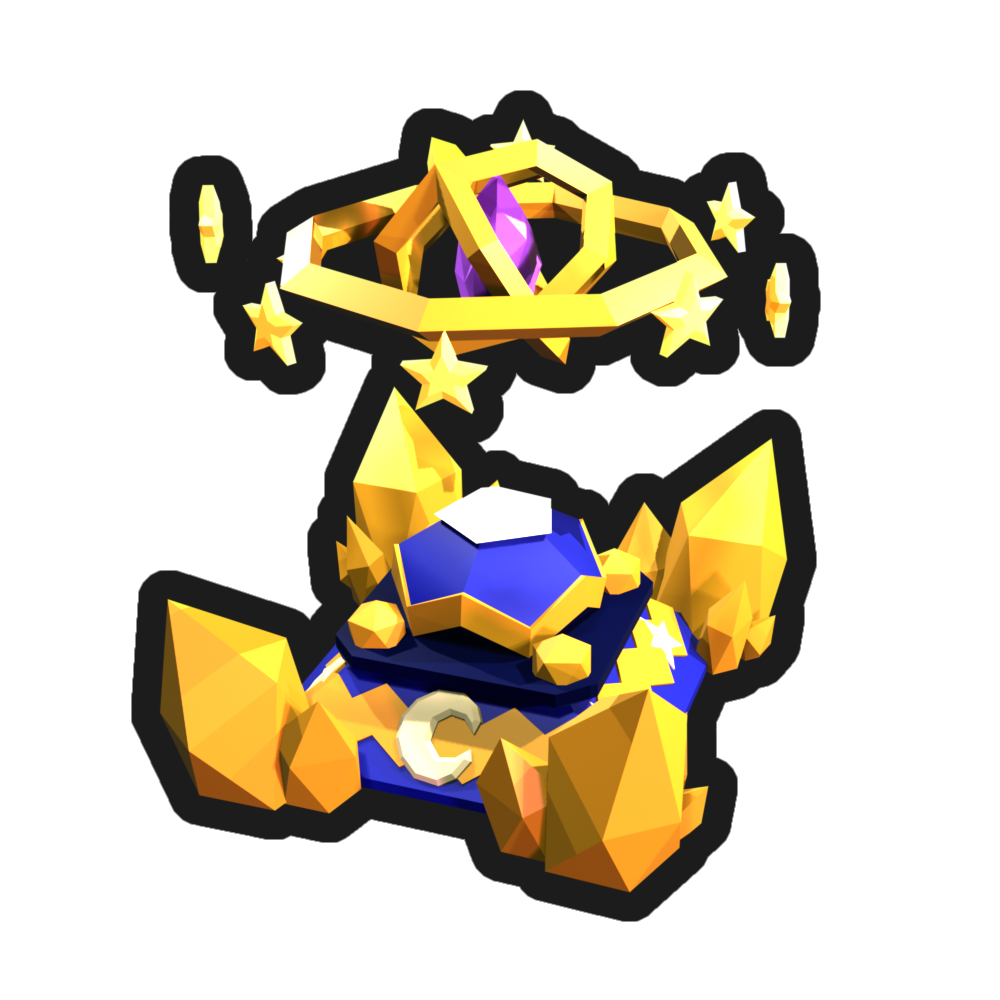

Lunar tasks scale with your points (capped at 7x base), and Consume Vines asks for at most 3 vines. Loot Luck does not apply to Lunar rewards.
Lunar Minigame
The Lunar Minigame is a time trial that can only be started at night. It costs 1 Lunar Ticket to begin, and once started you have 5 minutes to complete as many tasks as possible.

How It Works
- 1 Get a Lunar Ticket and wait until it turns night in-game, since the Lunar Altar only accepts entries after dark.
- 2 Interact with the Lunar Altar and spend your ticket to begin the trial.
- 3 A random task is assigned from the pool below. Complete it as fast as possible to receive the next one. You have 5 minutes total.
- 4 Each completed task gives you 1 point. Your final points count is tasks completed + 1, and you always earn 5 Lunar Treats per point.
- 5 You start the trial with 4 free reward rolls, plus 1 roll per point (points = tasks completed + 1).
- 6 Every point also gives you +100 minigame luck, improving your odds at rarer rewards. Your own Loot Luck stat does not apply here.
- 7 When the timer ends, all your rolls are exchanged for rewards from the pool below. If you roll the same reward more than once, the amounts stack.
Task Pool
Tasks are picked at random. A task's amount is
base × random multiplier × min(points1.5, 7),
where points is your tasks completed + 1 when the task is generated
(Consume Vines is capped at 3). Set the number of tasks you have already
completed to see the amount range of the next task.
| Task | Amount Range |
|---|
Rewards
With the tasks completed above you finish with
1 point(s) (luck 100),
5 reward rolls and always
5 Lunar Treats. Each reward's weight is
multiplied by a luck factor based on its rarity: rarer rewards need
more luck (150 + 750 / weight) to reach their normal weight and
are heavily reduced below that. Identical rewards stack.
| Reward | Amount | Chance per roll | Expected count |
|---|